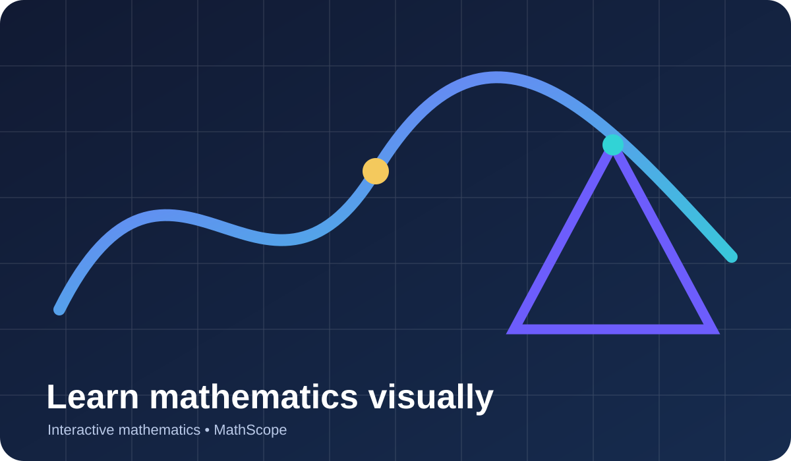

Visual • Rigorous • Interactive
See the reasoning behind mathematics.
MathScope combines clear explanations, proof ideas, worked examples and interactive graphs so learners can understand the structure behind the rules.
12interactive lessons
5subject areas
24+site pages
100%static hosting ready

Why it worksExplanations beyond procedures
InteractiveGraphs + saved progress
Explore
Five connected areas of mathematics
Move from symbolic reasoning to geometry, functions, data and calculus while seeing how ideas connect across topics.


Built for understanding
Every lesson asks “why?”
Rules are easier to remember when they follow from a mathematical idea. MathScope pairs procedures with invariants, geometric interpretations, proof sketches and visual models.
Try a lessonYour local progress
0%
0 of 12 lessons completed
Progress is saved in this browser only — no account required.
Featured lessons
View all lessonsStart with a guided concept
Foundations
Solving Linear Equations
An equation is a balance: applying the same operation to both sides preserves equality. Undoing operations in reverse order isolates the unk…
Open lesson →Intermediate
Systems of Linear Equations
A solution to a system must satisfy every equation at the same time. On a graph, that means the solution is the point shared by both lines —…
Open lesson →Intermediate
Quadratic Functions
A quadratic has constant second differences because the change in its slope is constant. Completing the square reveals the vertex by rewriti…
Open lesson →Foundations
Triangle Geometry
A line through one vertex parallel to the opposite side creates alternate interior angles. Those three angles form a straight line, proving …
Open lesson →Intermediate
Pythagorean Theorem
For a right triangle, areas of squares built on the two legs together equal the area of the square on the hypotenuse. Rearrangement proofs s…
Open lesson →Intermediate
Transformations & Symmetry
Rigid transformations preserve distances and angle measures. Coordinate rules are algebraic descriptions of geometric motion around a fixed …
Open lesson →